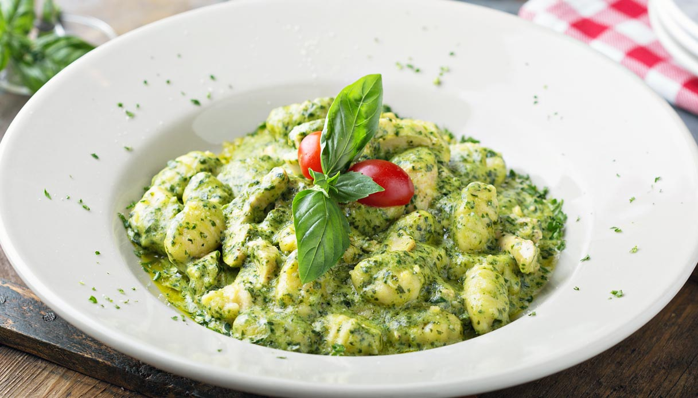

Gnocchi al pesto

Ingregients
- (potatoes')gnocchi 1kg
- parmigiano reggiano DOP (how much you prefere)
- mozzarella 200gr
- salt
- oil
- pesto 200gr
Steps
- Bring water to a boil in a pot and add the gnocchetti until they float to the surface.
- After collecting the gnocchetti with a skimmer, put them in a bowl with pesto and two tablespoons of parmigiano. Also add some diced mozzarella, mixing everything well.
- Put everything in an ovenproof dish and bake in the oven for about 10 minutes at 220°C.